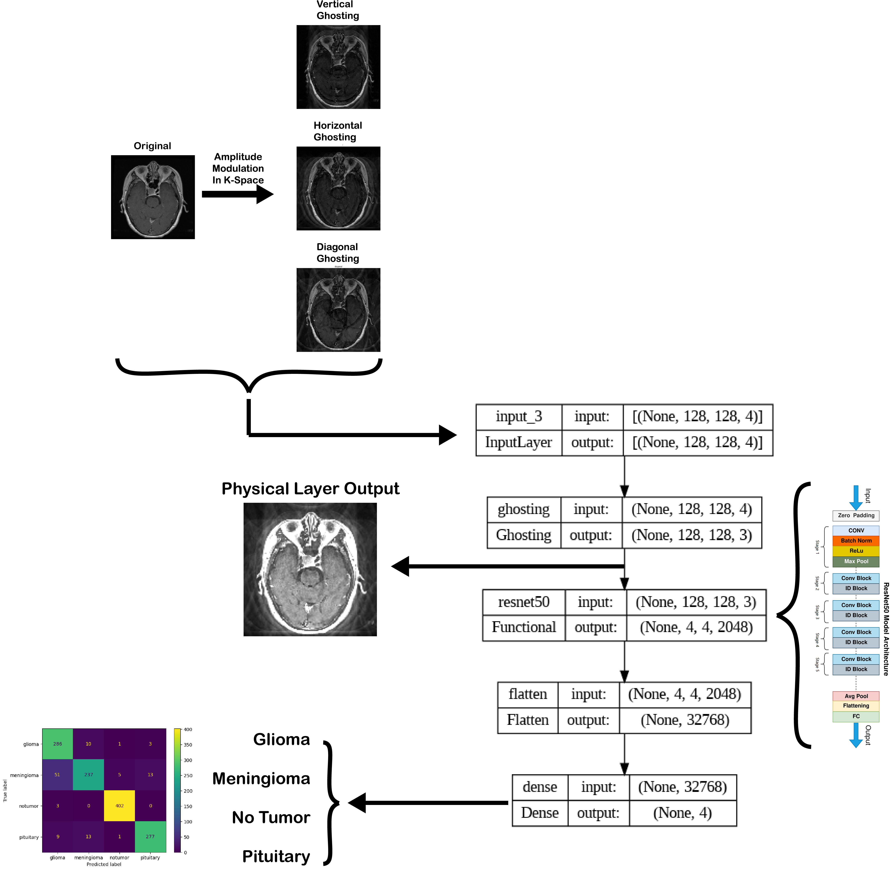

| Paper PDF |

|
Streamlining brain tumor classification with MRI images with machine learning algorithms can facilitate faster and more accurate diagnosis in clinical settings. While current algorithms can achieve good Classification accuracy, we wanted to investigate the possibility of further enhancing algorithm performance by taking advantage of ghosting artifacts which can potentially amplify tumor-related features in images. In this work, we We incorporated a physical layer of our model that generated ghosting in the horizontal, vertical, and diagonal directions. We then took a weighted sum of each ghosted direction with the original image. With this model, we were able to classify between glioma, meningioma, pituitary tumor, and no tumor groups with an accuracy of 91%. Interestingly the final weights indicated that horizontal ghosted is favored over other types of ghosting artifacts (including no ghosting artifacts). |
| Paper: |
Code and Data:
|